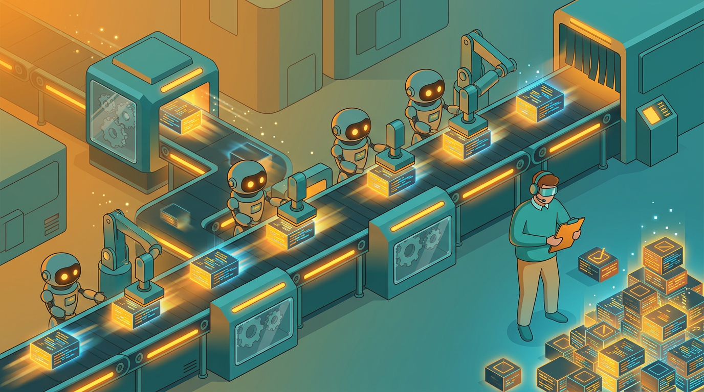

Tem uma cena que se repete em praticamente todo time que adotou agentes de codificação nos últimos meses: a esteira de pull requests parece uma fila de banco em dia de pagamento. Código sobrando, gente revisando a toque de caixa, e ninguém muito seguro se o que está entrando é bom ou só rápido. Um estudo recente de Harvard, com Fiona Chen e James Stratton analisando dados da plataforma Jellyfish — 300 milhões de eventos de trabalho, mais de 700 mil pessoas, 700 empresas de software, de 2021 até março de 2026 — colocou números numa sensação que quem está na trincheira já vinha sentindo no osso.
O achado central é simples de enunciar e incômodo de digerir: depois que os times passam a usar agentes de IA para gerar código, as linhas de código sobem 30%, os commits sobem 20%, os pull requests sobem 23%. Só que a taxa de resolução de issues e épicos no Jira não muda de forma estatisticamente significativa. Mais código. Mesmo tanto de software efetivamente entregue. Não é um empate técnico, é um desalinhamento real entre o que a IA produz e o que a empresa consegue absorver.
O gargalo trocou de lugar
Durante anos, o ponto mais lento do fluxo de desenvolvimento foi escrever código. Era ali que a gente travava: pensar na solução, lembrar da sintaxe certa, escrever o teste, debugar o óbvio. Os agentes — Cursor, Claude Code, Copilot, Codex, e a lista só cresce — atacaram exatamente essa etapa, e atacaram bem. O problema é que ninguém redesenhou o resto do fluxo pra lidar com a nova velocidade. Revisão de código, que sempre foi tratada como etapa de passagem, virou o funil.
Os números do estudo mostram isso com clareza: o tempo entre abrir um PR e fazer o merge subiu 49%. Pull requests com pedido de alteração quase dobraram. Comentários por PR subiram 35%. E 14% a mais de trabalhadores passaram a fazer revisão de código, gente que antes não revisava virou revisor porque o volume obrigou. Isso não é sintoma de time desorganizado, é matemática: se a geração de código dez vezes mais rápida e a capacidade humana de ler, entender e confiar em código continua sendo a mesma, a conta não fecha.

E aqui mora o ponto que mais me interessa como desenvolvedor que usa esses agentes todo santo dia: código gerado por IA não é sinônimo de código confiável. É código plausível. Ele compila, passa no teste óbvio, parece com o que um humano escreveria — e às vezes é exatamente isso que faz ele ser perigoso, porque a revisão superficial não pega o que está errado embaixo da superfície. É o que o pessoal já vem chamando de slop code: código tecnicamente funcional, mas sem o raciocínio de quem entende o domínio, que alguém vai ter que peneirar linha por linha depois. A promessa da produtividade infinita esbarra na pessoa que precisa, com responsabilidade de verdade, dizer "isso pode ir pra produção".
Quem segura a revisão hoje
Um dado do próprio levantamento é revelador: até março de 2026, 80% das empresas já usavam alguma forma de revisão de código com IA. Parece que o problema estaria resolvido, não é? Só que esses mesmos agentes respondem por apenas 23,3% dos comentários de revisão e 10,8% dos pull requests revisados. Na prática, a esmagadora maioria da carga ainda cai em cima de gente. A IA ajuda a escrever mais rápido do que ajuda a revisar, e esse descompasso é o verdadeiro nó do momento.
Faz sentido quando você para pra pensar em como revisão funciona de verdade. Escrever código é, em boa parte, um problema de geração: dado um contexto, produza uma solução plausível. Revisar é um problema de julgamento: entender a intenção de quem pediu a mudança, avaliar se a solução é a certa entre várias possíveis, prever efeitos colaterais em sistemas que a ferramenta nunca viu rodando em produção. Um agente consegue apontar um bug óbvio de sintaxe ou sugerir um teste faltando. Ele ainda erra feio em avaliar se aquela mudança de arquitetura faz sentido pro produto daqui a seis meses. Isso ainda é trabalho humano, e vai continuar sendo por um bom tempo.
Redesenhando o fluxo em volta da revisão
Os times que eu vejo lidando melhor com isso não tentaram frear os agentes. Eles mudaram a engenharia do processo ao redor. Algumas práticas que estão virando padrão de fato:
- PRs menores e mais frequentes: em vez de deixar o agente produzir uma mudança gigante de uma vez, o time quebra a tarefa em pedaços pequenos o suficiente pra revisar de verdade, não só carimbar.
- Testes automatizados como pré-filtro: cobertura de teste deixou de ser meta de qualidade e virou porteiro. Se não passa no teste, nem chega no humano. Isso tira do revisor o trabalho mecânico e deixa pra ele o julgamento.
- Auto-revisão do próprio agente antes do humano: pedir pro agente criticar o próprio código, rodar um segundo agente como revisor, ou usar checklist automatizado antes de abrir o PR. Reduz ruído, mas não substitui olho humano — só filtra o óbvio.
- Dono explícito de cada mudança: alguém assina embaixo, mesmo quando quem escreveu foi o agente. Responsabilidade não terceiriza.
Nenhuma dessas práticas é mágica nem nova, aliás. São as mesmas disciplinas de engenharia de sempre — PR pequeno, teste automatizado, dono claro — só que agora aplicadas com urgência redobrada, porque o volume que entra na esteira multiplicou e a esteira não cresceu junto.
O que isso diz sobre produtividade de verdade
O estudo também derruba um mito que andava circulando: não deu pra atribuir mudança significativa de emprego à adoção desses agentes. Não é que a IA esteja substituindo revisor nem que esteja eliminando vaga em massa — pelo menos não nesses dados, até março de 2026, segundo a cobertura da Ars Technica sobre o trabalho. O que está acontecendo é redistribuição de esforço: menos tempo escrevendo do zero, mais tempo lendo, questionando, aprovando ou rejeitando o que foi gerado. Trabalho de revisão sempre existiu, só que agora ele carrega o peso que antes estava distribuído na escrita.
Pra quem lidera time, a lição prática é direta: medir produtividade em linhas de código, número de commits ou PRs abertos virou métrica de vaidade. O que importa é quanto daquilo vira issue resolvida, feature entregue, bug corrigido de verdade. Se o funil de revisão não acompanhar o ritmo de geração, você só está acumulando trabalho represado com cara de progresso.
No fim das contas, a ferramenta ficou mais rápida, mas quem decide o que é bom continua sendo gente. E talvez seja hora de parar de medir o sucesso da IA generativa pelo volume que ela produz e começar a medir pelo tanto que ela deixa de atravancar quando alguém, do outro lado da tela, precisa confiar no que está lendo.